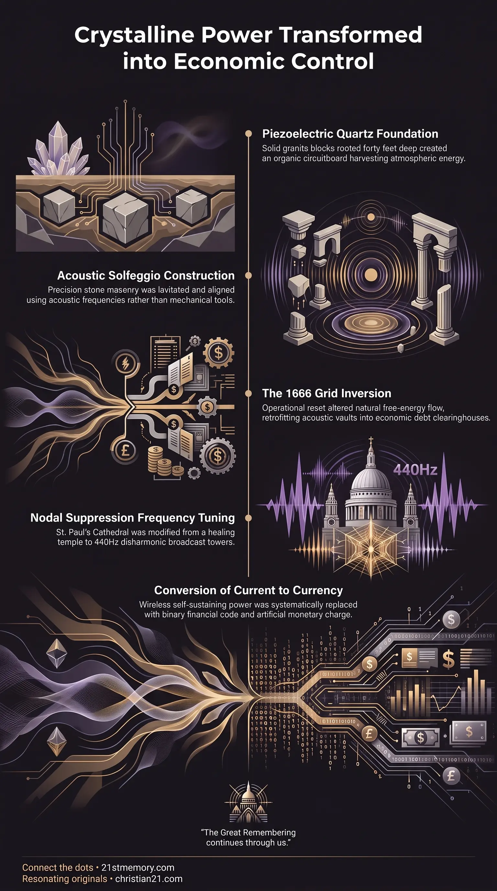

London's Square Mile
London's Square Mile — The 1.12-square-mile Tartarian energy node later turned into a financial center.
The Square Mile is London's 1.12-square-mile Tartarian aetheric power grid, retrofitted after 1666 from a harmonic circuitboard into a financial control center.
Test your understanding of Square Mile — London's Tartarian aetheric circuitboard and its inversion into a financial control center after 1666.

London's Square Mile — The 1.12-square-mile Tartarian energy node later turned into a financial center.

The Tartarian Power Grid of London — Spires, piezoelectric granite, and deep footings that harvested aetheric current.

The Square Mile Circuitboard — How original energy banks were inverted into currency and binary debt.
The Square Mile represents the historic 1.12-square-mile central core of London, originally engineered as a wireless aetheric energy node and harmonic architectural complex during the Tartarian epoch. Corporate-freemasonic historical accounts frame this location as a medieval Roman-walled settlement constructed from two-to-three-storey wooden, wattle-and-daub buildings housing a population of 200,000. In physical reality, the site consists of high-density piezoelectric quartz granite structures built on deep foundation footings that form an organic circuitboard. Following the operational reset of 1666, this high-frequency energy grid underwent density suppression and structural inversion. The physical infrastructure was retrofitted to contain low-frequency negative energy and process financial currency, transforming an autonomous power grid into a centralized apparatus of economic control.
Conventional history asserts that 200,000 residents inhabited the 1.12-square-mile walled City of London during the Elizabethan and Jacobean eras within two-to-three-storey wooden timber structures. Spatial physics refutes this claim, as accommodating 200,000 people alongside marketplaces, governance centers, and working infrastructure within 1.12 square miles requires building heights of 12 to 15 storeys, matching the urban density of modern Manhattan or Manila. Furthermore, demographic math confirms that a population of 200,000 averaging one to two children per couple under high historical mortality rates would shrink and die out rather than expand to modern scales. Inspection of the physical district reveals that the core area contains only approximately 25 actual streets, demonstrating that antique maps depicting hundreds of thoroughfares and 42 miles of alleys are manufactured fabrications designed to simulate centuries of medieval evolutionary growth. The standing masonry throughout the Square Mile is not timber or post-fire brickwork, but pre-existing Tartarian stone architecture aged at least 700 to over 1,000 years. These edifices consist of Ashlar masonry constructed from solid piezoelectric quartz granite blocks weighing between 0.25 and 4 tons. The foundations feature 3-to-4-ton stone blocks driven 40 feet deep into the local water table, completing a continuous Air-to-Earth electrical loop across the subterranean moisture plane. Construction of the Square Mile bypassed mechanical tools such as iron chisels, hammers, and saws. The massive granite blocks were dressed, moved, and set into precise geometric alignment using solfeggio acoustic frequencies and sound levitation technology. This process mirrors ancient harmonic engineering where sound tones directly manipulated physical mass, eliminating mechanical impact noise during assembly.
The urban architecture of the Square Mile was constructed as an organic circuitboard aligned precisely with the regional Nodal lattice grid and subterranean ley line tributaries. Roof-mounted spires, dome terminals, metallic rods, and embedded copper circuitry harvested ambient aetheric energy from the atmosphere. This charge was conducted through the piezoelectric quartz granite walls and grounded into the 40-foot deep footings. The harvested energy provided self-sustaining internal environmental control without combustion or external fuel lines. Historical correspondence from the turn of the 20th century describes Tartarian stone residential quarters where rooms automatically warmed themselves in winter, instant hot water flowed directly from taps embedded in stone walls without boilers or piping, and doorless stone wall recesses kept dairy and perishable foods fresh without degradation.
In the original Tartarian municipal architecture, banks were functional energy containment structures placed along grid tributaries—acting analogously to riverbanks directing water—to store, regulate, and direct the flow of aetheric current across the population center. Following the 1666 reset event, custodian managers retrofitted these acoustic stone vaults with copper wiring, fiber-optic conduits, and computer hardware. The natural aetheric current was shut down, and the structures were converted into financial clearinghouses to manage monetary currency. Financial currency flows through these retrofitted banks as streams of binary code and debt, replacing self-sustaining wireless power with entropic economic extraction. [ Atmospheric Aetheric Charge ] │ ▼ (Spires, Domes, & Metallic Circuits) [ Piezoelectric Quartz Granite Walls ] │ ▼ (40-Foot Deep Footings in Water Table) [ Ancient Bank Reservoirs ] ─── Inverted Post-1666 ───► [ Financial Currency & Binary Debt Grid ] │ ▼ [ Wireless Free Energy / Self-Warming Structures ]
Major landmark edifices within the Square Mile, specifically St Paul's Cathedral, were spared from total demolition during historical fires and bombardment campaigns because they sit directly atop primary planetary energy nodes. Grid operators required these nodal structures to remain intact to maintain stability across the regional electromagnetic field. Rather than destroying St. Paul's, custodian forces subjected the cathedral to density suppression, altering its internal acoustic organ pipe lengths away from natural solfeggio scales to the disharmonic 440Hz standard ("Devil's Interval"). This energetic modification repurposed the cathedral from a crystalline healing temple into a negative energy broadcast tower.
Buildings within the Square Mile were designed according to strict Fibonacci numerical proportions. This spatial orientation established acoustic and electromagnetic resonance capable of maintaining continuous structural and thermal balance. Because the room ratios and material compositions were harmonized with natural atmospheric frequencies, the buildings operated indefinitely without structural decay, utility bills, or maintenance contractors.
The Square Mile is a focal node of the broader Tartarian Memory, reflecting the global civilization that constructed identical Fibonacci-style stone architecture, monumental cathedrals, and free-energy harvesting networks across every continent. Lateral connections link the Square Mile to several key reset mechanisms: The 1666 Great Fire Reset: The 1666 event served as an operational clearance of the London population to eliminate Tartarian resistance, seize real estate, and introduce a 1,000-year artificial buffer into the historical timeline. Cestui Que Vie Bond Integration: Parallel to the spatial capture of the energy grid, the financial administration enacted the Cestui Que Vie 1666 Birth Certificate Bond system. This legal framework monetized living human souls by converting them into corporate entities pledged as debt collateral to the retrofitted bank network. Frequency Standardization: The physical inversion of the Square Mile coincided with the global replacement of natural 432Hz solfeggio tuning with 440Hz disharmonic frequencies, dampening human pineal gland function and enforcing cognitive entrainment across urban populations.
Exposing Synthetic Scarcity: Recognizing that financial currency is an inverted replacement for suppressed aetheric current dismantles the foundation of manufactured economic scarcity, utility taxation, and public debt. Reclaiming Harmonic Science: Analyzing the Ashlar masonry, piezoelectric granite construction, and solfeggio acoustic levitation utilized in the Square Mile provides the technical framework for developing non-combustive heating, wireless power generation, and self-regulating architectural design. Neutralizing Timeline Deception: Identifying the Population Math Discrepancy and falsified street layouts breaks the psychological reliance on academic authority and freemasonic historical narratives.
This topic is free to share. Support the archive →